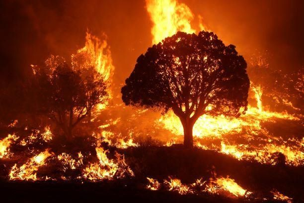

인천 쿠팡 물류센터 대형 화재… 국가소방동원령·이재명 대통령 “총력 대응”
인천의 쿠팡 물류센터에서 큰불이 났다. 불길은 외벽을 타고 위층으로 번져 7층까지 올라갔고, 넓은 공간과 짙은 연기로 진화가 난항을 겪었다. 소방청은 국가소방동원령을 내렸고, 이재명 대통령은 대형 물류시설 안전관리 체계 전반의 점검을 지시했다.
장입군 기자 · 2026.07.23
橋한국

인천의 쿠팡 물류센터에서 발생한 화재가 외벽을 타고 윗층으로 번져 7층까지 확산됐다고 경향신문·조선일보가 전했다. 공간이 넓고 짙은 연기가 발생하면서 진압에 어려움이 컸고, 화재는 9시간 넘게 이어졌다.
광고 문의 · 300×250소방 당국은 대응 수위를 최고 단계로 끌어올렸다. 소방청은 인접 지역의 소방력을 집중 투입하는 국가소방동원령을 발령했다. 대만 연합보(聯合報)도 인천의 물류센터가 검은 연기에 휩싸였고, 소방 인력이 13시간에 걸쳐 대규모로 투입됐으나 진화가 쉽지 않았다고 보도했다.
왜 물류센터 화재는 진압이 어려운가
대형 물류센터는 층고가 높고 내부가 트여 있어 불이 나면 급격히 번진다. 적재된 포장재와 상품이 가연물이 되고, 자동화 설비와 좁은 통로가 진입을 어렵게 한다. 외벽 마감재를 타고 위로 번지는 ‘수직 확산’은 초기 진화의 최대 난제다.
이재명 대통령은 “대형 물류 시설의 안전 관리 체계 전반을 점검하라”며 총력 대응을 지시했다. 인명 피해 최소화와 함께, 반복되는 물류센터 화재의 구조적 원인을 짚어야 한다는 목소리가 커지고 있다.
재한 화인 사회에도 물류·유통업 종사자가 적지 않다. 대형 사업장의 화재 안전은 특정 기업만의 문제가 아니라, 그곳에서 일하는 모든 노동자의 생명과 직결된 문제라는 점에서 이번 사고는 남의 일이 아니다.
출처·참고 (사실 확인용 — 본문은 직접 재작성)
· 경향신문
· 조선일보
· 연합보
· 경향신문
· 조선일보
· 연합보